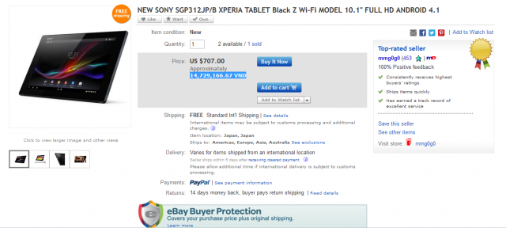

Xperia Tablet Z có giá 707$ trên ebay
Những ngày gần đây độ hot của tablet này ngày một tăng. Không những có thiết kế ngon mà mẫu tablet này sở hữu khả năng rất độc đáo đó chính là chống nước, tương tự Xperia Z. Với kích thước 10″, Xperia tablet Z mang lại trải nghiệm rất tốt cho những bạn hay đọc sách, báo và coi video. Sở hữu Camera 8 “chấm” nhưng kết quả chụp hình ở chế độ Auto lại ra chất lượng ảnh tốt hơn Xperia Z! Điều này mình đã trải nghiệm qua Roadshow tổ chức tại Nguyễn Du. Fan Sony có thể tự tin rằng trong hàng ngũ tablet hiện nay thì Xperia Tablet Z là 1 trong những chiếc tablet chụp ảnh tốt nhất.
Lượn qua ebay mình được biết giá thấp nhất do thương nhân uy tín trên ebay đưa ra là 707$ tương đương 14,7 triệu cho bản Wifi 32GB.
